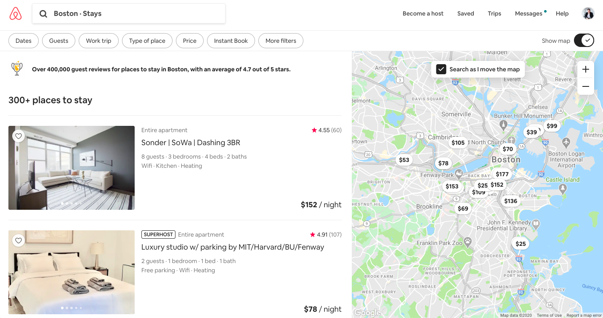
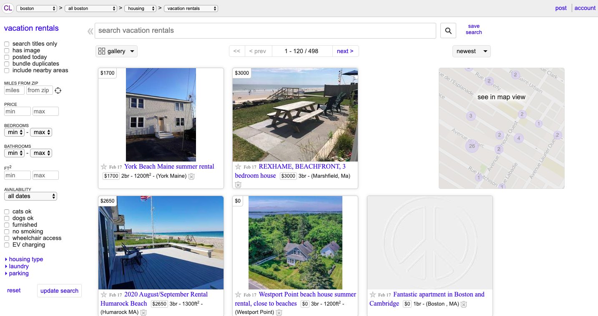

One of the strongest aspects of AirBnb is that their user interface is very clean, modern, and responsive. Their web layout
succeeds in the contrast, alignment, and repetition. The screen is split in half with a map showing all the rentals available
from the search query on the map, and this proximity
UI Hall of Shame

Craigslist was built to be customer-to-customer marketplace and shopping experience
where anyone can list something they are selling, renting, or simpling getting rid of. In practice,
this idea is very simple and seems like it serves a good purpose. One of the unique features of this marketplace
that sets it apart from other C2C websites like eBay is that it was location based, meaning you could search for
products, items, etc. in your surrounding neighborhood.